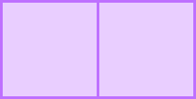
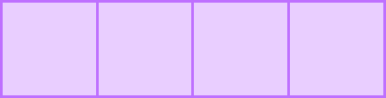
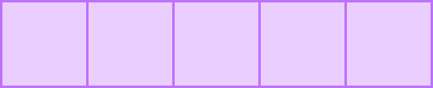
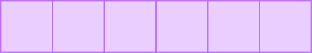
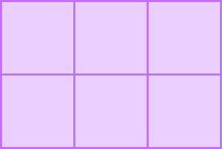
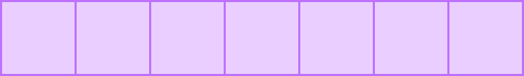
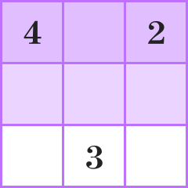
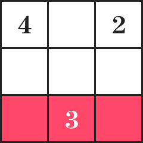
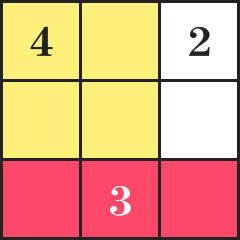

한 변의 길이가 1인 정사각형 블록이 있다. 이 정사각형 블록을
2개,
3개,
4개,
5개,
6개,
7개를 이어 붙여
가로와 세로를 구분하지 않고 직사각형을 몇 가지 만들 수 있는지 알아보자.
정사각형 블록
2개를 이어 붙일 때, 가로의 길이가
2, 세로의 길이가
1인 직사각형을 만들 수 있다. 이때 가로의
길이와 세로의 길이를 구분하지 않고 가로의 길이가
1, 세로의 길이가
2인 직사각형은 같은 것으로 생각한다.
따라서 정사각형 블록
2개를 이어 붙여 만들 수 있는 직사각형은
한 가지이다.

정사각형 블록 3개를 이어 붙일 때, 가로의 길이가
3, 세로의 길이가
1인 직사각형을 만들 수 있다.
따라서 정사각형 블록 3개를 이어 붙여 만들 수 있는 직사각형은
한 가지이다.
정사각형 블록 4개를 이어 붙일 때, 가로의 길이가
4, 세로의 길이가
1인 직사각형과 가로의 길이가
2, 세로의
길이가 2인 직사각형을 만들 수 있다.
따라서 정사각형 블록 4개를 이어 붙여 만들 수 있는 직사각형은
두 가지이다.

정사각형 블록 5개를 이어 붙일 때, 가로의 길이가
5, 세로의 길이가
1인 직사각형을 만들 수 있다.
따라서 정사각형 블록 5개를 이어 붙여 만들 수 있는 직사각형은
한 가지이다.

정사각형 블록 6개를 이어 붙일 때, 가로의 길이가
6, 세로의 길이가
1인 직사각형과 가로의 길이가
3, 세로의
길이가 2인 직사각형을 만들 수 있다.
따라서 정사각형 블록 6개를 이어 붙여 만들 수 있는 직사각형은
두 가지이다.


정사각형 블록 7개를 이어 붙일 때, 가로의 길이가
7, 세로의 길이가 1인 직사각형을 만들 수 있다.
따라서 정사각형 블록 7개를 이어 붙여 만들 수 있는 직사각형은
한 가지이다.

정사각형 블록을 이어 붙여 직사각형을 만들 때,
블록의 개수가 2, 3, 5, 7과 같은 소수이면 직사각형을
한 가지만 만들 수 있고, 블록의 개수가 합성수이면
직사각형을 만들 수 있는 방법은 두 가지 이상이다.
예를 들어 정사각형 블록
12개를 이어 붙인다고 생각해 보자.
12를 두 자연수의 곱으로 나타내 보자.
12=1_12, 12=2_6, 12=3_4
즉, 세 가지 경우로 나타낼 수 있다.
따라서 12는 합성수이고, 정사각형 블록
12개를 이어 붙여 만들 수 있는 직사각형은 가로의 길이가
1이고 세로의
길이가 12인 직사각형, 가로의 길이가
2이고 세로의 길이가
6인 직사각형, 가로의 길이가
3이고 세로의 길이가 4인
직사각형의 세 가지이다.
이와 같은 소수와 합성수의 성질을 이용하여 제시된 가로
3칸, 세로
3칸짜리 게임판을 색칠해 보자.

게임판을 색칠하는 방법은 다음과 같다.
(1) 게임판에 제시된 수만큼 직사각형, 정사각형 모양으로 색칠한다. (이때 그 숫자가 적힌 칸을 포함해야 한다.)
(2) 서로 겹치거나 빈칸이 남지 않게 게임판을 모두 색칠해야 한다.
먼저 소수가 적힌 칸을 색칠해 보자.
소수 3을 색칠하는 방법은 가로로
3칸 또는 세로로
3칸을 색칠하는 방법이 있다.
이때 세로로 3칸을 색칠한다면
4가 적힌 칸을 기준으로
4칸을 색칠할 수 없으므로,
3이 적힌 칸을 기준으로
가로로 3칸을 색칠한다.

이번에는 합성수
4를 색칠하는 방법을 생각해 보자.
4는 가로로
4칸 또는 세로로
4칸을 색칠하거나 가로로
2칸과 세로로
2칸을 색칠하는 방법이 있다. 이때 게임판에
4칸을 연속하여 색칠할 수 없으므로
4가 적힌 칸을 기준으로 가로로
2칸과 세로로
2칸을 색칠한다.

이제 딱 2칸이 남아 있고, 게임판에
2만 적혀 있다. 따라서 나머지
2칸을
2가 적힌 칸을 기준으로 색칠하면 모든
게임판을 덮을 수 있다.
이와 같이 소수와 합성수의 성질을 이용하여 직사각형 모양을 색칠해 가면서 게임판을 모두 덮을 수 있다.